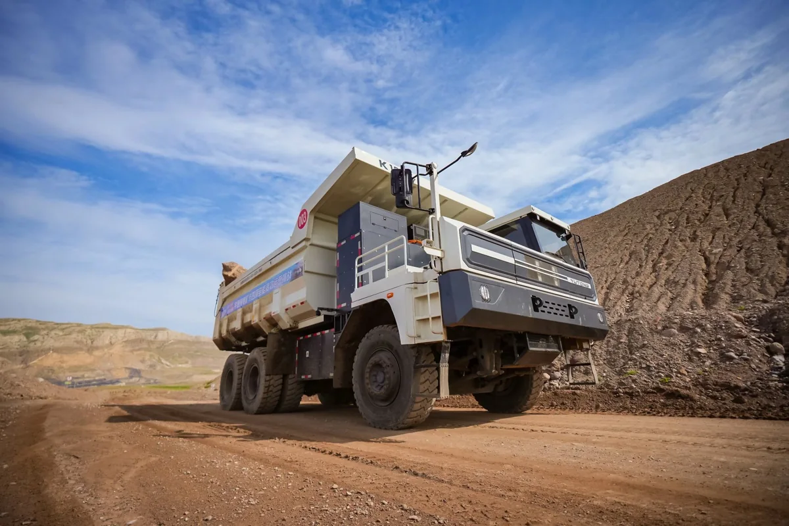
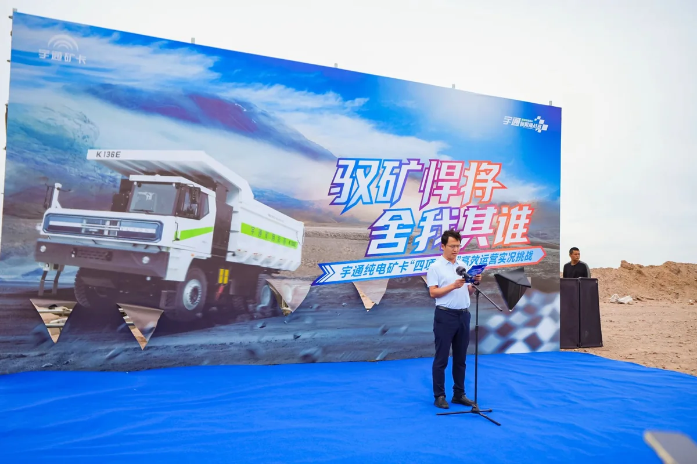
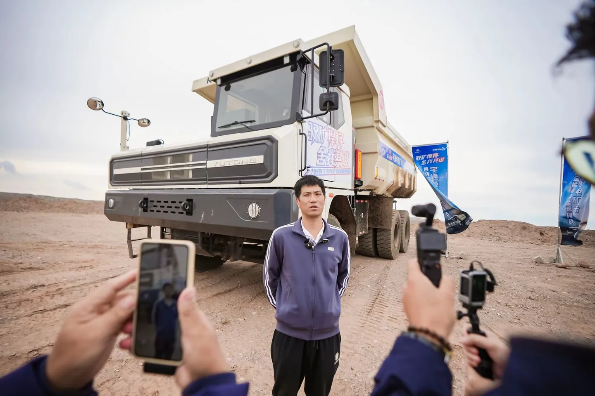
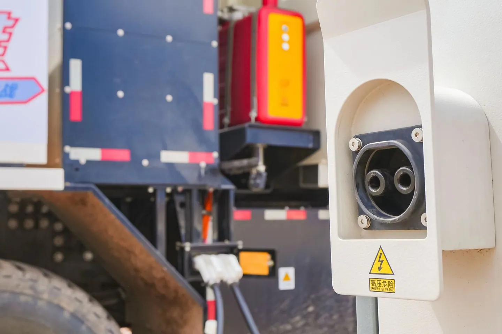
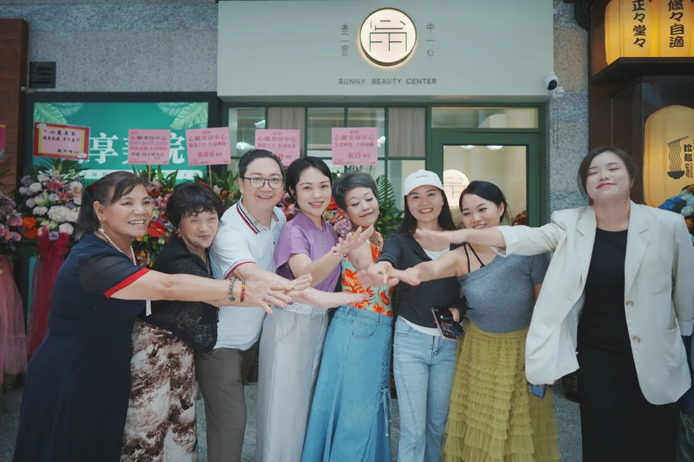
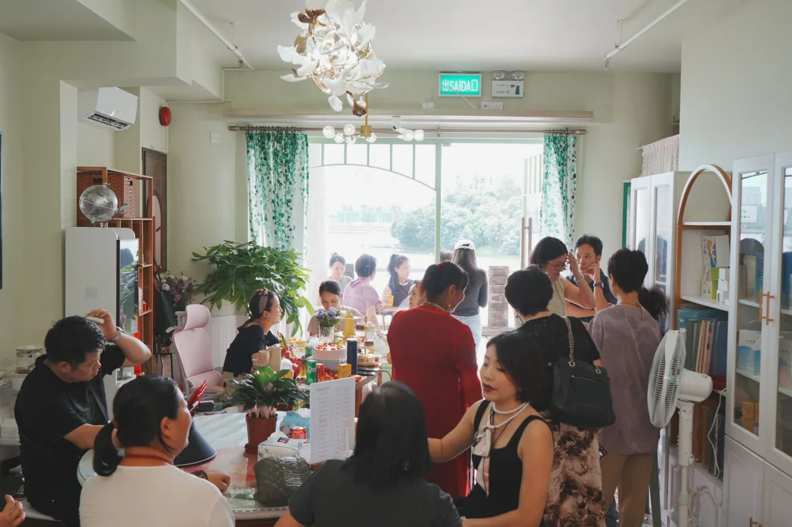
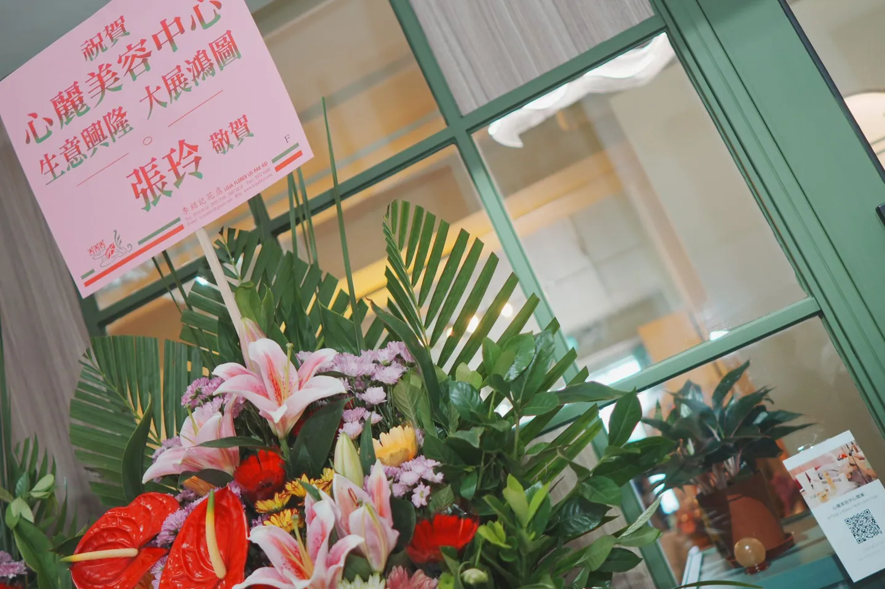
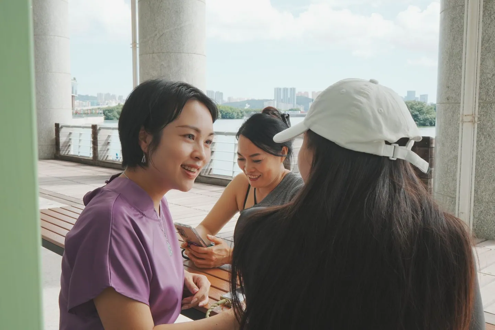
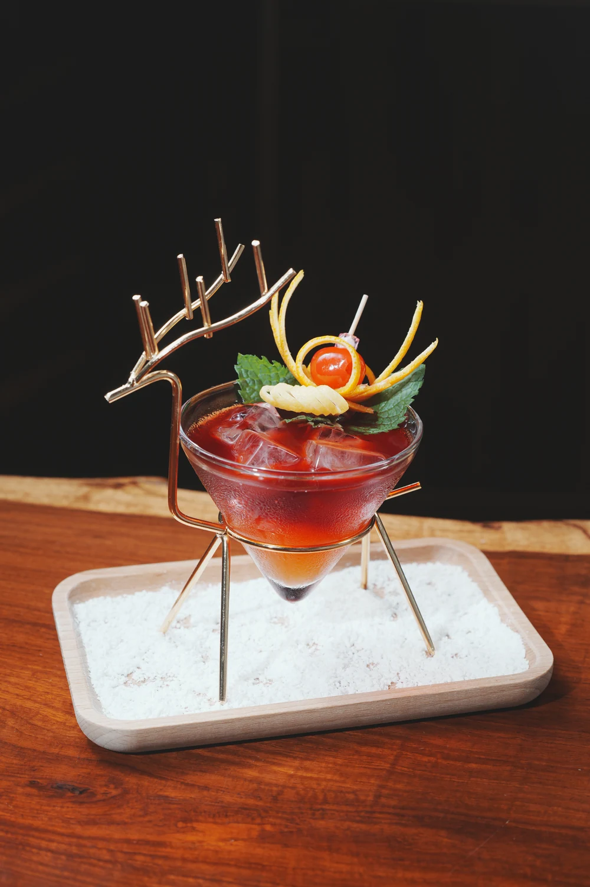
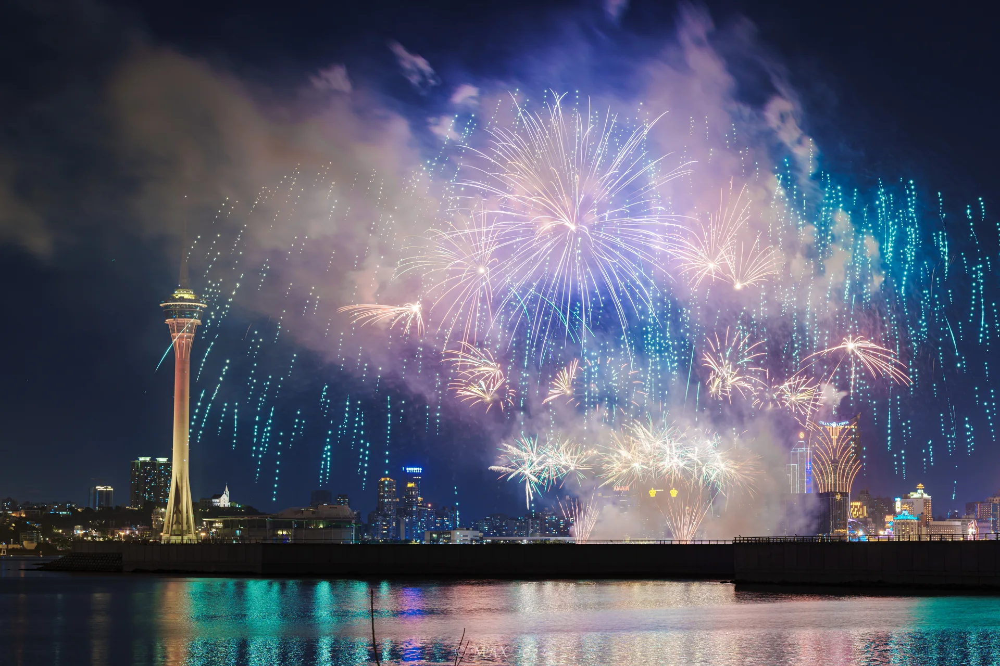

项目交付
- 会议、互动与颁奖照片
- 现场图片直播相册
DiaSorin 亚太区经销商年会
DiaSorin APAC-Export Annual Distributor Meeting 2026（Macau）
查看完整直播相册 ↗酒店客房、公共空间与商业室内。
点击现场照片可放大浏览，完整相册收录了每场活动的更多照片。
DiaSorin APAC-Export Annual Distributor Meeting 2026（Macau）
查看完整直播相册 ↗



宇通纯电矿卡「四项全能」高效运营实况挑战
查看完整直播相册 ↗



第二届中国(澳门)国际高品质消费博览会暨商贸文化与品牌服务暨两岸暨港澳茶馆业发展论坛
查看完整直播相册 ↗

START A PROJECT · MACAO & GBA
立足中山与澳门，服务粤港澳大湾区及跨境项目。欢迎直接来信或微信交流预算、档期与成片需求。